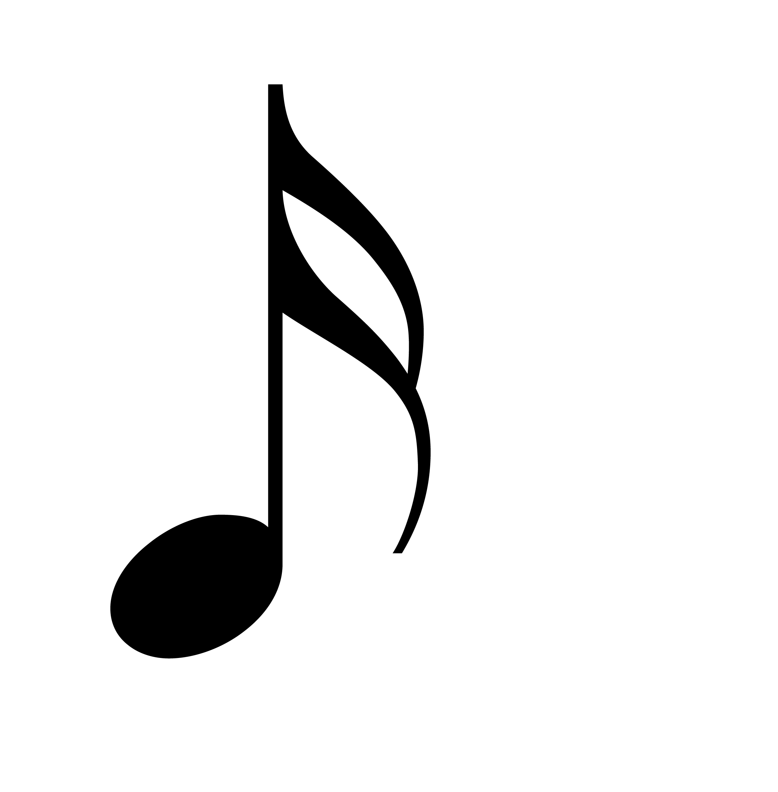

Weird Fishes/Arpeggi by Radiohead
Click On the note on the right timing to score points
Score: 0
Timer: Not Started

Click On the note on the right timing to score points

Ever since the stone age, we humans have been resonating our voices and using our bodies as instruments to make art in the form of sound. After that, the earliest known instrument was a bone flute found in the caves of southern germany as well as harps and lyres in ancient egypt. The oldest known melody is the hurrian hymn to nikkal, inscribed on a clay tablet in syria about 3,400 years ago
|
v
In medieval times, people typically listened to music in the form of gregorian chants sung by catholic churches. In the Renaissance art in general got major improvements, where music gained expressiveness in the form of polyphony and secular music where they allowed the intertwining of multiple melodies
|
v
In the baroque era, opera and standard music scales were introduced into the scene, creating great composers like J.S. Bach and Antonio Vivladi. In the Classical era, symphony and string quartets were introduced, producing great composers like Mozart and Beethoven
|
v
The Romantic Period expanded on intense emotion, individual expression and orchestral expansion and created great composers like Tchaikovsky and Chopin. In the 19th Century, African American communities created blues and jazz genres which introduced higher levels of improvisation and syncopathed rythmns. In the 1950s, there was a big skyrocket in the rock and roll genre, eventually branching out to subgenres like punk, grunge and heavy metal in the following generations.
|
v
The late 20th and 21st centuries revolutionized how we make and listen to music, popularising electronic dance music, hip-hop and contemporary pop with new inventions, along with the internet making it much easier for up and coming artists to distribute their music.
(Charles Darwin)
He had the same question, stating that mankind's ability to make music "must be ranked amongst the most mysterious with which he is endowed" as it provided no benefit to our survival from an evolutionary standpoint, so why is it that we continue to make and listen to music to this day?
Well, to this day scientists do not yet know why we make music, but many field studies have provided theories such as music providing bonding time from parents to their children (Dr. Sammler in a study for the scienceadvances paper), or to improve group cohesion (Dr. Ozaki said in that same study).
However, my favourite theory is that it is simply a universal language that all cultures can understand, providing a perfect way to harmonize the world (Daniela Sammler, a neuroscientist at the Max Planck Institute for Empirical Aesthetics in Frankfurt)
PS. this is a really long article, so just click this button to just see a diagram instead that summarizes all of this
These are all things that can bring cities together to unite under one cause, providing better social connections with each other
Music can help with all the things listed above
These are all the things that music do for you and why you should get into it
LSD and the Search for God by LSD and the Search for God
loveless by my bloody valentine
i saw an angel in the mirror by Robin Callaway
Deathconsciousness by Have A Nice Life
wetdream by WillyRodriguezWasTaken
In Rainbows(Disk2) by Radiohead
To See the Next Part of the Dream by Parannoul
We're Not Here to Be Loved by Fleshwater
World Is Yours by MASS OF THE FERMENTING DREGS
Weird Fishes/Arpeggi from the album In Rainbows by Radiohead